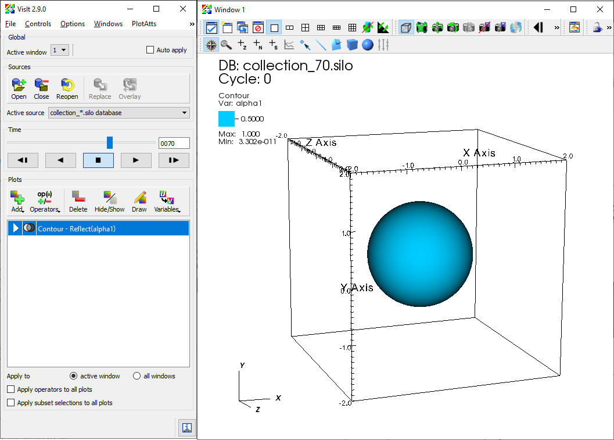

|
MFC
High-fidelity multiphase flow simulation
|
|
MFC
High-fidelity multiphase flow simulation
|
Post-processed database in Silo-HDF5 format can be visualized and analyzed using VisIt (Childs et al., 2012). VisIt is an open-source interactive parallel visualization and graphical analysis tool for viewing scientific data. Versions of VisIt after 2.6.0 have been confirmed to work with the MFC databases for some parallel environments. Nevertheless, installation and configuration of VisIt can be environment-dependent and are left to the user. Further remarks on parallel flow visualization, analysis and processing of MFC database using VisIt can also be found in Coralic (2015); Meng (2016).
After post-process of simulation data (see section Running), a folder that contains a silo-HDF5 database is created, named silo_hdf5. silo_hdf5 includes directory named root, that contains index files for flow field data at each saved time step. The user can launch VisIt and open the index files under /silo_hdf5/root. Once the database is loaded, flow field variables contained in the database can be added to plot.
As an example, the figure bellow shows the iso-contour of the liquid void fraction (alpha1) in the database generated by example case 3D_sphbubcollapse. For analysis and processing of the database using VisIt's capability, the user is encouraged to address VisIt user manual.

*Iso-contour of the liquid void fraction (alpha1) in the database generated by example case 3D_sphbubcollapse*
If parallel_io = F then MFC will output the conservative variables to a directory D/. If multiple cores are used ($\mathtt{ppn > 1}$) then a separate file is created for each core. If there is only one coordinate dimension ($n = 0$} and $p = 0$) then the primivative variables will also be written to D/. The file names correspond to the variables associated with each equation solved by MFC. They are written at every t_step_save time step. The conservative variables are
$$ {(\rho \alpha)}_1, \dots, (\rho\alpha)_{N_c}, \rho u_1, \dots, \rho u_{N_d}, E, \alpha_1, \dots, \alpha_{N_c} $$
and the primitive variables are
$$ {(\rho \alpha)}_1, \dots, (\rho\alpha)_{N_c}, u_1, \dots, u_{N_d}, p, \alpha_1, \dots, \alpha_{N_c} $$
where $N_c$ are the number of components num_fluids and $N_d$ is the number of spatial dimensions. There are exceptions: if model_eqns $=3$, then the six-equation model appends these variables with the internal energies of each component. If there are sub-grid bubbles bubbles $=$ T, then the bubble variables are also written. These depend on the bubble dynamics model used. If polytropic $=$ T then the conservative variables are appended by
$$ n_b R_1, n_b {\dot R}_1, \dots, n_b R_{N_b}, n_b {\dot R}_{N_b} $$
where $n_B$ is the bubble number density and $N_b$ are the number of bubble sizes (see matching variable in the input file, Nb). The primitive bubble variables do not include $n_B$:
$$ R_1, {\dot R}_1, \dots, R_{N_b}, {\dot R}_{N_b} $$